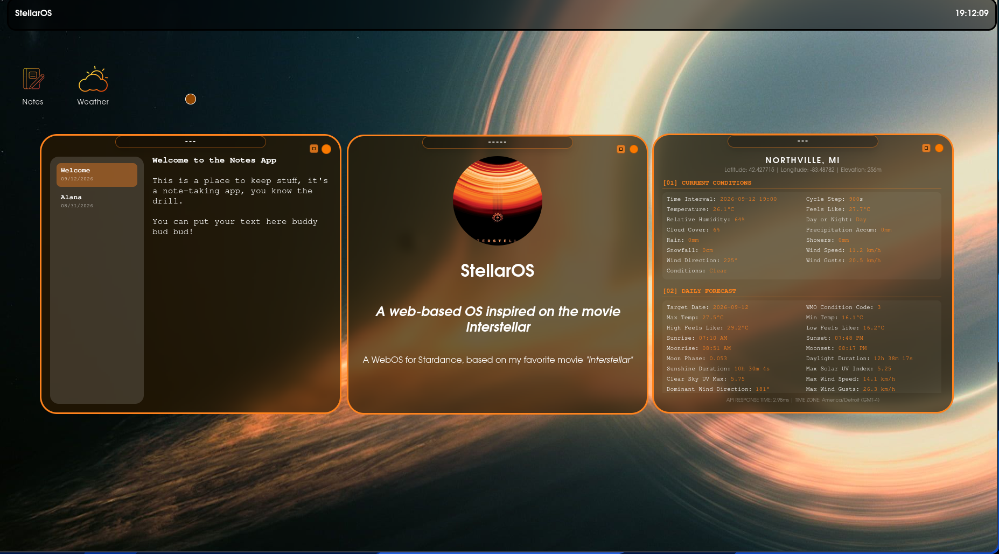
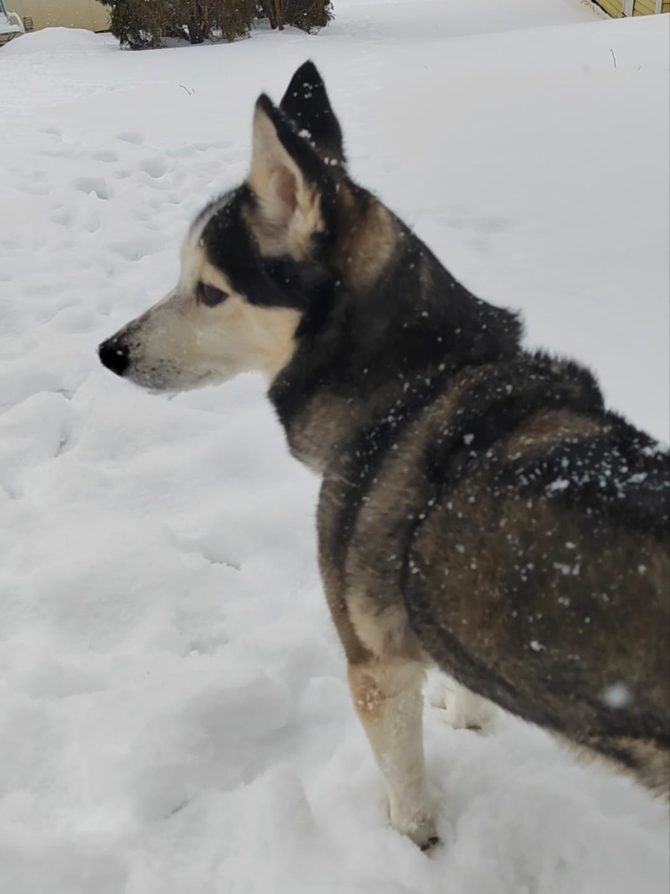

Spoon
After acquiring my carving tools, I began exploring woodcraft through this original spoon design. The piece was carved from basswood and was intended for practical use, though its size and depth made it better suited as a decorative object.
Hands-on work, creative exploration, and practical problem solving
Projects are an important way to demonstrate initiative, creativity, and independent thinking. They often reveal a student’s abilities beyond the classroom and provide a practical representation of how they approach challenges, explore ideas, and solve real problems.
After acquiring my carving tools, I began exploring woodcraft through this original spoon design. The piece was carved from basswood and was intended for practical use, though its size and depth made it better suited as a decorative object.

This bear was one of my earlier sculptural pieces and represents an early step in my woodworking and carving development. Although it is not my first attempt, it remains a meaningful example of my growth in technique and design.

This bird is one of my more recent carvings and reflects a renewed focus after a several-month pause. It is a reminder of how practice, patience, and experimentation continue to shape my craftsmanship.

StellarOS was developed for the Stardance Hackathon as a web-based operating system concept. The project required nearly eight hours of work, but the final result was a polished and functional prototype that I was proud to complete.

At Maybury Farm, there was a washing area near the barn where tools and equipment were cleaned after daily use. The water was directed to a drainage point behind the station, but the original gravel system was ineffective because the rock size was too small, causing sediment to clog the drainage area and create a stagnant, unsanitary puddle. With support from my supervisor, other volunteers, and equipment, we rebuilt the drainage system using a more effective layering of larger and smaller stones to improve water flow and reduce buildup.

Near the garden, there was a resting area with a tent and benches for volunteers and visitors. We were assigned the task of relocating it, which gave me a more hands-on leadership role than I had previously experienced. Together with another volunteer and a supervisor, I helped prepare the site, mix and pour concrete, and secure the support posts for the new structure. It was a rewarding project because it allowed me to contribute more directly to the farm’s infrastructure.

Additional projects are planned, including a TARS-inspired design from Interstellar, a miniature robotic Rocky inspired by Project Hail Mary, and a custom violin. I look forward to continuing to build and refine these ideas in the future.